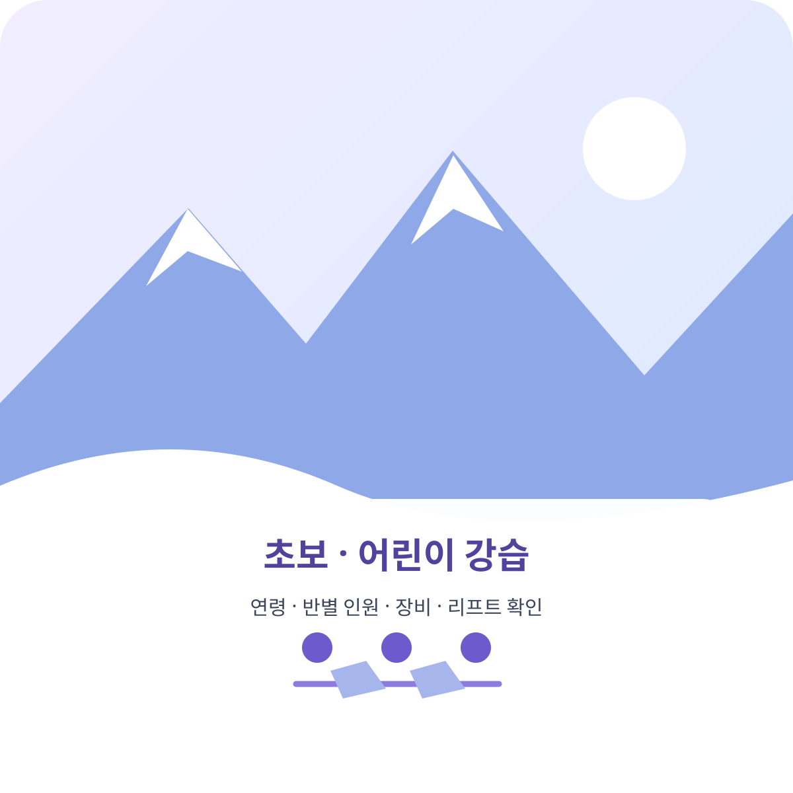

Beginner & Kids · 2026-10-03 확인
무주 스키·보드 강습: 초보·어린이 예약 전 확인할 점

처음 배우거나 어린이 강습을 예약할 때는 연령과 반별 인원, 수업 구성, 장비·리프트권 포함 여부를 먼저 확인하세요. 리조트 공식 안내에는 만 4~6세 유아 스키학교, 초등학교 1~3학년 스키 처음반, 스노우보드 강습이 소개되어 있습니다.
아래 내용은 무주덕유산리조트 스키학교 공식 안내를 2026-10-03에 확인해 요약한 것입니다. 연령별 운영, 예약 가능일, 강습료는 시즌별로 달라질 수 있으므로 예약 전에 스키학교에 확인하세요.
공식 안내에서 확인되는 강습 기준
| 구분 | 공식 안내 내용 | 예약 전에 확인할 것 |
|---|---|---|
| 유아 강습 | 만 4~6세 미취학 아동 대상 유아 스키학교 안내 | 방문 날짜에 운영하는지, 연령 확인 기준 |
| 어린이 강습 | 초등학교 1~3학년 대상 1:6 스키 처음반; 1:1 또는 1:6 가능 | 현재 반 편성, 강사 1명당 인원, 보호자 대기 장소 |
| 초보 과정 | 준비운동, 장비 사용, 넘어지고 일어서기, 걷기, 멈추기·방향 전환 기초 | 수업 시간과 초급 슬로프 이용 조건 |
| 스노우보드 | 12세 이상 초급~상급 과정 안내; 일부 요금표는 초등학교 5학년~성인으로 표기 | 프로그램별 실제 접수 연령과 반 편성을 전화로 확인 |
| 예약·비용 | 사전 예약 필요, 장비·리프트 대여는 강습과 별도 안내 | 강습료, 장비, 리프트권이 각각 포함되는지 |
무주보드강습·무주스노우보드강습도 운영하나요?
네. 무주덕유산리조트 공식 스키학교는 스노우보드 초급부터 상급까지 강습을 안내합니다. 공식 페이지는 기본 연령을 12세 이상으로 표시하고, 요금표 일부에는 초등학교 5학년부터 성인까지라고 적혀 있습니다. 무주리조트보드강습을 신청할 때는 참가자 나이와 반별 접수 가능 여부를 접수처에 확인하세요. 리프트와 장비 렌탈은 별도입니다.
예약 전에 물어볼 5가지
- 1. 나이와 경험에 맞는 반인지 확인합니다.
첫 수업인지, 이미 멈추기나 방향 전환을 할 수 있는지 알려 알맞은 반을 문의하세요. - 2. 강습 인원과 보호자 대기 위치를 묻습니다.
어린이 강습은 반별 인원과 인계 장소, 수업 종료 후 만나는 위치를 확인하세요. - 3. 강습료와 별도 비용을 나눠 확인합니다.
강습, 스키 장비, 의류, 리프트권이 한 요금에 포함되는지 항목별로 확인하세요. - 4. 준비물을 챙깁니다.
공식 안내는 장갑과 고글을 개인 준비물로 안내합니다. 헬멧 등 보호장비의 대여 여부도 문의하세요. - 5. 예약 확정과 취소 조건을 확인합니다.
예약 시각, 도착 장소, 지각·기상 상황에 따른 변경 및 취소 조건을 확인하세요.
자주 묻는 질문
무주보드강습이나 무주스노우보드강습도 있나요?
네. 리조트 공식 스키학교는 스노우보드 초급부터 상급까지 강습을 안내합니다. 접수 가능 일정과 반별 운영은 전화로 확인하세요.
무주리조트보드강습은 몇 살부터 신청할 수 있나요?
공식 페이지는 스노우보드 강습을 12세 이상으로 안내하지만, 요금표 일부에는 초등학교 5학년부터 성인까지라고 적혀 있습니다. 참가자의 정확한 접수 가능 연령은 접수처에 확인하세요.
무주 스키 어린이 강습은 몇 살이나 몇 학년 대상인가요?
공식 안내에는 만 4~6세 유아 스키학교와 초등학교 1~3학년 스키 처음반이 표시되어 있습니다. 시즌 운영일과 반 편성은 방문 전에 확인하세요.
강습료에 리프트와 장비 대여가 포함되나요?
아니요. 리조트 공식 안내는 리프트와 장비 렌탈을 강습과 별도로 안내합니다. 필요한 품목과 비용을 각각 확인하세요.
예약 문의
리조트 스키학교 공식 안내에 표시된 연락처는 063-320-7348, 063-320-7349입니다. 시즌 중 운영시간과 상담 가능 여부를 전화로 확인해 주세요. 이 글은 스키학교 강습 조건을 안내하며, 강습료를 확정 가격으로 제시하지 않습니다.